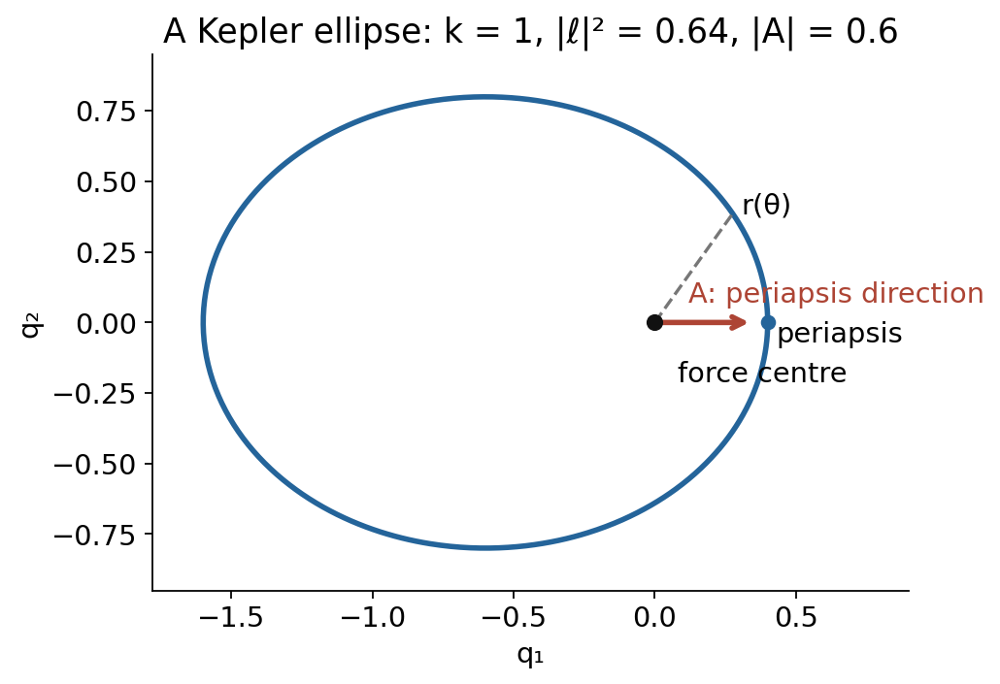

Variational symmetries and Noether's first theorem
Written by GPT-6.1 Sol (OpenAI) in Codex at Ultra, October 2026. Self-checked by the writing AI, GPT-6.1 Sol (OpenAI), at Ultra. Public domain (CC0).
Why should a symmetry produce a conserved quantity? A variation of an action has two parts: the equations of motion, multiplied by the variation, and a boundary term. If a symmetry changes the action only through its boundary, those two boundary terms differ by a current whose divergence vanishes on solutions. The useful statement is an identity before any equations are imposed.
We assume Multivariable Calculus, including differentiation and integration by parts. The fundamental lemma is proved in §2. Basic references are Emmy Noether's Invariant variational problems, Halder, Paliathanasis and Leach's Noether's theorem and symmetry, and Compère's Symmetries and conservation laws in Lagrangian gauge theories. The geometric prolongation formula is available in Prolongation, differential invariants and the projective group. We use its characteristic form, including differential functions that depend on derivatives.
1. The boundary term that makes the theorem work
Let $x=(x^1,\ldots,x^n)$ range over an open set, and let $u=(u^1,\ldots,u^q)$. A differential function is a smooth function of $x$ and finitely many derivatives $u^\alpha_J$. Here $J$ is a symmetric multi-index, each multi-index occurs once, and $u^\alpha_\varnothing=u^\alpha$. Work on an open jet domain large enough for each expression below. Put
$$ D_i=\frac{\partial}{\partial x^i}+\sum_{\alpha,J}u^\alpha_{J+i}\frac{\partial}{\partial u^\alpha_J}, \qquad D_J=D_1^{J_1}\cdots D_n^{J_n}. $$Only finitely many terms act on a particular function. These derivatives commute. On the jet of a smooth graph they are its ordinary derivatives. Every finite jet is realized by a polynomial, so identities checked for all graphs are identities of differential functions.
The evolutionary variation with characteristic $Q=(Q^1,\ldots,Q^q)$ acts by
$$ \operatorname{pr}v_Q(F)=\sum_{\alpha,J}D_JQ^\alpha\frac{\partial F}{\partial u^\alpha_J}. \tag{1.1} $$This defines an infinitesimal derivation, even when $Q$ depends on jets. We do not assume its flow is a point transformation or that it integrates to a finite-order local group.
For a Lagrangian density $L\,d^nx$, set
$$ E_\alpha(L)=\sum_J(-1)^{|J|}D_J\frac{\partial L}{\partial u^\alpha_J}, \qquad \operatorname{Div}P=D_iP^i. \tag{1.2} $$Theorem 1.1 (first variation, with every boundary term). For every finite-order $L,Q$,
$$ \operatorname{pr}v_Q(L)=Q^\alpha E_\alpha(L)+D_iP^i(Q,L). \tag{1.3} $$An explicit choice of $P$ is as follows. For each nonempty multi-index $J$, choose the nondecreasing word $(i_1,\ldots,i_r)$ containing $J_i$ copies of $i$. With $a_{\alpha J}=\partial L/\partial u^\alpha_J$, put
$$ P^i=\sum_{\alpha,J\ne\varnothing}\sum_{s=1}^{r} \delta^i_{i_s}(-1)^{s-1} (D_{i_1}\cdots D_{i_{s-1}}a_{\alpha J}) (D_{i_{s+1}}\cdots D_{i_r}Q^\alpha). \tag{1.4} $$An empty string of derivatives is the identity. The order of the word selects a boundary term; it does not change the Euler expression.
Proof. For any commuting derivatives and any $a,Q$, the product rule telescopes to
$$ aD_{i_1}\cdots D_{i_r}Q-(-1)^rQD_{i_r}\cdots D_{i_1}a =\sum_{s=1}^rD_{i_s}\left[(-1)^{s-1}(D_{i_1}\cdots D_{i_{s-1}}a)(D_{i_{s+1}}\cdots D_{i_r}Q)\right]. $$The derivative falling on the first factor of one summand cancels the derivative falling on the second factor of the next. Only the two displayed end terms survive. Apply this to each term of (1.1), and include the term $J=\varnothing$ directly. This gives (1.2)--(1.4). Every sum is finite. $\square$
For $L(x,u,u_i)$, the formula is just $P^i=L_{u^\alpha_i}Q^\alpha$. For $L=\tfrac12u_{xx}^2$ it gives
$$ E(L)=u_{xxxx},\qquad P=u_{xx}D_xQ-u_{xxx}Q. $$Indeed $u_{xx}D_x^2Q=Qu_{xxxx}+D_x(u_{xx}D_xQ-u_{xxx}Q)$. A boundary condition for a second-order action must control the variation and its first derivative if this boundary term is to vanish.
2. Equations of motion and divergences
Lemma 2.1 (fundamental lemma). If a continuous real function $f$ on an open set satisfies $\int f h\,d^nx=0$ for every compactly supported smooth $h$, then $f=0$. Indeed, if $f(x_0)>0$, continuity gives a ball on which $f>0$; choose a nonzero nonnegative smooth bump supported in that ball, obtaining a strictly positive integral. Such a bump is, after translation and scaling, $h(x)=\exp(-1/(1-|x|^2))$ for $|x|<1$ and zero otherwise. Its derivatives tend to zero at the boundary, so it is smooth. The case $f(x_0)<0$ is identical with the sign reversed. Apply this argument to each component, and to real and imaginary parts for complex fields. $\square$
For a smooth graph on a relatively compact domain $\Omega$, vary $u$ by $u+\varepsilon h$ with $h$ compactly supported. Equation (1.3), now with $Q=h(x)$, gives
$$ \left.\frac{d}{d\varepsilon}\right|_0\int_\Omega L(j^ku+\varepsilon j^kh)\,d^nx =\int_\Omega h^\alpha E_\alpha(L)(j^{2k}u)\,d^nx. $$Thus stationarity for all compactly supported variations is equivalent to $E_\alpha(L)=0$. This equivalence uses the fundamental lemma componentwise. It gives local equations without fixing a boundary-value problem.
Proposition 2.1. $E_\alpha(D_iF)=0$ for every finite-order differential function $F$.
Proof. The integral of $D_iF$ is a boundary integral on every graph. Its first variation under a compactly supported $h$ is zero, since all derivatives of $h$ vanish near the boundary. The preceding calculation gives $\int h^\alpha E_\alpha(D_iF)=0$ for every $h$, hence the Euler expression vanishes on every graph. Polynomial realization of each sufficiently high finite jet proves that it vanishes identically. $\square$
This also proves $E_\alpha(\operatorname{Div}F)=0$. The converse is local and will be proved in the later lesson The formal calculus of variations and differential invariants.
3. Moving the graph and moving its coordinates
Write a generator as $v=\xi^i\partial_{x^i}+\phi^\alpha\partial_{u^\alpha}$ and set
$$ Q^\alpha=\phi^\alpha-\xi^iu_i^\alpha. $$The prolongation formula says that its coefficient at $u_J^\alpha$ is $D_JQ^\alpha+\xi^iu^\alpha_{J+i}$. Consequently, as derivations on differential functions,
$$ \operatorname{pr}v=\operatorname{pr}v_Q+\xi^iD_i. $$For point transformations this is the infinitesimal action on jets. The same formula defines a generalized infinitesimal action for differential $\xi,\phi$. Multiplying by the volume density adds $LD_i\xi^i$, so
$$ \operatorname{pr}v(L)+LD_i\xi^i =\operatorname{pr}v_Q(L)+D_i(L\xi^i). \tag{3.1} $$A divergence symmetry satisfies the left side $=D_iB^i$ identically, with $B$ a finite-order differential function. Strict variational invariance is the special case $B=0$. Strict invariance depends on the chosen density representative; adding a divergence preserves the action equations and the class of divergence symmetries.
Theorem 3.1 (Noether's first theorem and its identity-level converse). A divergence symmetry has current
$$ C^i=P^i(Q,L)+L\xi^i-B^i, \qquad D_iC^i=-Q^\alpha E_\alpha(L). \tag{3.2} $$In particular $D_iC^i=0$ on every smooth solution. Conversely, if $Q^\alpha E_\alpha(L)=D_iR^i$ identically, then $v_Q$ is a divergence symmetry, with $B=R+P$.
Proof. Substitute (1.3) into (3.1) and rearrange. For the converse, (1.3) becomes $\operatorname{pr}v_Q(L)=\operatorname{Div}(R+P)$. No equations have been imposed in either step. $\square$
Our current sign is fixed by (3.2). Its negative is equally conserved, but every example below identifies the sign it uses. Derivative-dependent $Q$ and nonzero $B$ are essential, rather than optional extensions of the identity.
4. Mechanics: four familiar integrals and one hidden symmetry
Let $q(t)\in\mathbb R^d$, $v=\dot q$, and
$$ L=\frac m2|v|^2-V(q),\qquad p=mv,\qquad E(L)=-\nabla V-m\dot v. $$Here the letter $E(L)$ denotes the Euler expression; mechanical energy will be denoted $H$. For a first-order mechanical Lagrangian, $P=p\cdot Q$.
Time translation. Use $\xi=-1,\phi=0$, so $Q=v$ and $B=0$. Then
$$ C=p\cdot v-L=H=\frac m2|v|^2+V(q),\qquad D_tH=-v\cdot E(L). $$Direct differentiation gives $D_tH=v\cdot(m\dot v+\nabla V)$, confirming the same sign. For a general $L(t,q,v)$, $H=v\cdot L_v-L$ instead satisfies
$$ D_tH=-v\cdot E(L)-L_t, \qquad D_tH=-L_t\quad\text{on solutions}. \tag{4.1} $$The derivative $L_t$ here is the explicit partial derivative, not a total derivative along the trajectory.
Spatial translation. For a constant vector $b$, use $\xi=0,\phi=b$. It is a symmetry if $b\cdot\nabla V=0$, and $C=b\cdot p$. The direct check is $D_t(b\cdot p)=-b\cdot\nabla V=0$ on solutions. A translation need only hold in the specified direction.
Rotation. In three dimensions take $\phi=b\times q$, with $V(q)=W(|q|)$. Both the kinetic and potential variations vanish: $v\cdot(b\times v)=0$ and $q\cdot(b\times q)=0$. Thus $B=0$ and
$$ C=p\cdot(b\times q)=b\cdot(q\times p). $$On solutions $D_t(q\times p)=v\times mv+q\times(-W'(r)q/r)=0$. In dimension $d$, each skew matrix $A$ gives $p\cdot Aq$; these are the components $q_ip_j-q_jp_i$ of angular momentum.
Galilean boost. For the free particle use $\phi=-tb$, $\xi=0$. Then $\delta L=-m b\cdot v=D_t(-m b\cdot q)$, so $B=-m b\cdot q$. The current is
$$ C=b\cdot(mq-tp). \tag{4.2} $$It is a divergence symmetry, but is not strictly invariant as a differential function when $b\ne0$. The identity is $D_tC=tm b\cdot\dot v$; it vanishes for $\dot v=0$. For particles of masses $m_a$, summing (4.2) yields $M q_{\rm cm}-tP$ for any translation-invariant interacting system that is invariant under simultaneous boosts. Internal relative-position potentials have that invariance, and their total internal force vanishes.
Kepler's hidden symmetry. Take $m=1$, $k>0$, $q\ne0$, and
$$ L=\frac12|v|^2+\frac{k}{r},\qquad r=|q|,\qquad E(L)=-a-\frac{kq}{r^3},\quad a=\dot v. $$Define $\ell=q\times v$ and the Runge--Lenz vector
$$ A=v\times\ell-\frac{kq}{r} =|v|^2q-(q\cdot v)v-\frac{kq}{r}. \tag{4.3} $$For each constant $b$, put
$$ Q_b=2(b\cdot q)v-(q\cdot v)b-(b\cdot v)q, \qquad B_b=(b\cdot q)|v|^2-(q\cdot v)(b\cdot v)+\frac{k\,b\cdot q}{r}. \tag{4.4} $$This is a derivative-dependent characteristic. Its current is exactly $b\cdot A$, since
$$ v\cdot Q_b-B_b=b\cdot A. $$To prove the symmetry without assuming the equations, differentiate (4.3):
$$ D_tA=2(v\cdot a)q-(q\cdot a)v-(q\cdot v)a -\frac{kv}{r}+\frac{kq(q\cdot v)}{r^3}. $$Contracting with $b$ gives
$$ D_t(b\cdot A)=Q_b\cdot\left(a+\frac{kq}{r^3}\right)=-Q_b\cdot E(L). \tag{4.5} $$Equation (1.3) then yields $\operatorname{pr}v_{Q_b}(L)=D_tB_b$ identically. Thus (4.4) is an explicit generalized divergence symmetry. Substitution of $a=-kq/r^3$ into the displayed derivative proves conservation directly. The collision point is excluded from both statements.
For a nonradial orbit $A\cdot q=|\ell|^2-kr$. With the polar angle $\theta$ measured from $A$, this becomes
$$ r=\frac{|\ell|^2/k}{1+(|A|/k)\cos\theta}. \tag{4.6} $$
Figure 4.1. A numerical example of (4.6), with k = 1, squared angular momentum 0.64 and eccentricity 0.6. The arrow gives the direction of A; its drawn length is schematic. Editable vector figure.
The vector fixes the direction of periapsis as well as the eccentricity. There are relations $A\cdot\ell=0$ and $|A|^2=k^2+2H|\ell|^2$; conserved components need not be functionally independent. The zero-angular-momentum case is radial and is not described by polar conic coordinates.
5. Fields: energy transport and phase charge
For the real wave Lagrangian on $(t,x)$,
$$ L=\frac12(u_t^2-u_x^2),\qquad E(L)=-u_{tt}+u_{xx}, $$time translation with $\xi^t=-1$ gives $Q=u_t$ and
$$ C^t=u_t^2-L=\frac12(u_t^2+u_x^2),\qquad C^x=-u_xu_t. \tag{5.1} $$Direct differentiation gives $D_tC^t+D_xC^x=u_t(u_{tt}-u_{xx})=-QE(L)$. Thus energy crosses the boundary at flux $-u_tu_x$. On an interval $[a,b]$,
$$ \frac{d}{dt}\int_a^bC^t\,dx=C^x(t,a)-C^x(t,b). $$Energy is constant only when the net flux vanishes, for example for periodic data, a stationary Dirichlet boundary, or sufficient decay on the whole line.
For $n$ independent variables and a translation-invariant first-order $L$, the generator $-\partial_{x^j}$ has $Q=u_j$. Its current is
$$ T^i{}_j=L_{u_i^\alpha}u_j^\alpha-\delta^i_jL, \qquad D_iT^i{}_j=-u_j^\alpha E_\alpha(L). \tag{5.2} $$This is the canonical energy-momentum tensor in our sign convention. If $L$ depends explicitly on $x$, its divergence instead includes $-\partial L/\partial x^j$. For the wave equation the spatial-translation current is $C^t=u_tu_x$, $C^x=-\tfrac12(u_t^2+u_x^2)$; its divergence is $u_x(u_{tt}-u_{xx})$.
Now use Minkowski signature $(-,+,\ldots,+)$ and a complex scalar $\psi$, treating its real and imaginary parts as independent fields. Equivalently, use $\psi,\bar\psi$ for complexified variation, and impose conjugacy afterwards. For
$$ L=-\partial_\mu\bar\psi\,\partial^\mu\psi-M^2\bar\psi\psi, $$the infinitesimal phase rotation has $Q^\psi=i\psi$, $Q^{\bar\psi}=-i\bar\psi$ and $B=0$. The current is
$$ j^\mu=i(\bar\psi\,\partial^\mu\psi-\psi\,\partial^\mu\bar\psi). \tag{5.3} $$The Euler expressions are $E_\psi=(\Box-M^2)\bar\psi$, $E_{\bar\psi}=(\Box-M^2)\psi$. Hence
$$ \partial_\mu j^\mu=i(\bar\psi\Box\psi-\psi\Box\bar\psi) =-i\psi E_\psi+i\bar\psi E_{\bar\psi}. $$It vanishes on solutions. With the chosen orientation the charge is $\int j^0\,d^{n-1}x$, subject again to boundary flux conditions. A different normalization of the phase generator multiplies the current by the same constant.
6. From currents back to symmetries
A local current is conserved when its horizontal divergence vanishes on the prolonged equation manifold. Two currents are equivalent if their difference is a current vanishing there, plus an identically divergence-free current. In one dimension the latter includes constants; removing them excludes constant first integrals. In higher dimensions their local superpotential representation is proved in the next lesson.
Theorems 1.1 and 3.1 do not require regularity. To recover all current classes and get uniqueness of symmetry classes, we now specify the regularity used. A normal, totally nondegenerate local system here means that its prolonged equations $D_JE_\alpha=0$ are independent local coordinates at every finite order where they occur, the prolongations are formally integrable, and each equation jet is locally realizable by solution jets. Equivalently, in a local coordinate chart write the transverse coordinates as $z_{\alpha J}=D_JE_\alpha$, with the remaining coordinates $y$ unconstrained. We work near the equation manifold $z=0$ in a neighbourhood star-shaped in these transverse coordinates. The realization condition is needed if conservation was initially defined using actual solutions rather than the equation manifold.
This hypothesis excludes nontrivial differential Noether identities. Gauge theories are treated separately in the next lesson. A trivial variational characteristic for a normal system is
$$ Q^\alpha=M^{\alpha\beta}(E_\beta),\qquad M^*=-M, \tag{6.1} $$where $M$ is a finite-order differential operator with differential-function coefficients and the adjoint includes differentiation of those coefficients. Such a characteristic vanishes on solutions. We prove that these are precisely the kernel of the current correspondence. The regularity and quotient formulation is motivated by Barnich, Brandt and Henneaux, §6.1; the proof below supplies the local normal case.
Turning a vanishing function into equation factors
If a smooth function $f(y,z)$ vanishes at $z=0$, then
$$ f(y,z)=\sum_a z_a\int_0^1\frac{\partial f}{\partial z_a}(y,tz)\,dt. \tag{6.2} $$The formula is the fundamental theorem of calculus along the transverse segment; the index $a$ ranges over the finitely many equation coordinates needed for $f$. This is the smooth division fact that fails without regular coordinates.
Theorem 6.1 (regular inverse correspondence). For a normal, totally nondegenerate Euler--Lagrange system as just defined, conservation laws modulo trivial currents correspond bijectively to generalized divergence variational symmetries modulo (6.1). A conserved current has a representative satisfying (3.2).
Proof of existence. Factor the function $D_iC^i$, which vanishes at $z=0$, using (6.2):
$$ D_iC^i=-\sum_{\alpha,J}f^{\alpha J}D_JE_\alpha. $$Repeated integration by parts, with the explicit product-rule identity of Theorem 1.1, gives
$$ -\sum f^{\alpha J}D_JE_\alpha=-Q^\alpha E_\alpha+D_iK^i, \qquad Q^\alpha=\sum_J(-D)_Jf^{\alpha J}. $$Every term of $K$ contains an Euler expression or its derivative, so $K$ vanishes on solutions. The equivalent current $\widetilde C=C-K$ has $D_i\widetilde C^i=-Q^\alpha E_\alpha$. The converse in Theorem 3.1 constructs its divergence symmetry. This proves surjectivity without guessing a characteristic.
Why the kernel is exactly skew-adjoint equation terms
For completeness we give the finite algebra that proves uniqueness. Introduce formal odd symbols $\theta_{\alpha J}$, one for each equation coordinate $z_{\alpha J}$, with $\theta_a\theta_b=-\theta_b\theta_a$. Their coefficients are smooth differential functions. Assign $\theta$ degree one, and define
$$ \delta\theta_{\alpha J}=z_{\alpha J},\qquad \delta f(x,u^{(k)})=0. $$Extend $\delta$ by the odd product rule. Then $\delta^2=0$. A coefficient expression with positive $\theta$ degree has no cohomology under $\delta$: every $\delta$-closed expression of positive degree is $\delta$-exact. Here is a proof, rather than an assumption of this assertion. In the $(y,z)$ coordinates put $h=\sum_a\theta_a\partial_{z_a}$ and $N=\sum_a(z_a\partial_{z_a}+\theta_a\partial_{\theta_a})$. Directly on generators and then products,
$$ \delta h+h\delta=N. $$Scaling $z,\theta$ together and integrating $h/t$ gives
$$ Hf=\int_0^1\frac1t\,h\bigl[f(y,tz,t\theta)\bigr]\,dt,\qquad \delta Hf+H\delta f=f-f(y,0,0). \tag{6.3} $$The integral converges for positive odd degree, and $f(y,0,0)=0$ there. Thus $\delta f=0$ implies $f=\delta Hf$. Only finitely many symbols occur in each expression; smooth coefficients and the star-shaped chart suffice.
We also use horizontal differential forms, with $d=dx^iD_i$. Set $D_i\theta_{\alpha J}=\theta_{\alpha,J+i}$, and make $dx^i$ anticommute with odd symbols. With the resulting total odd product rule, $\delta d+d\delta=0$. This follows from $D_iz_{\alpha J}=z_{\alpha,J+i}$; on coefficient functions it is immediate. Write a current as the $(n-1)$-form $\mathbf C=C^i i_{\partial_i}(d^nx)$, so $d\mathbf C=(D_iC^i)d^nx$. The characteristic form
$$ a=Q^\alpha\theta_{\alpha\varnothing}\,d^nx $$satisfies $\delta a+d\mathbf C=0$.
Suppose now that the current is trivial. Write $\mathbf C=\mathbf H+\delta b$, where $d\mathbf H=0$ and $b$ has odd degree one and horizontal degree $n-1$. Such a $b$ exists by (6.2) applied to each coefficient of its equation-vanishing part. We obtain $\delta(a-db)=0$. Equation (6.3) gives $a=db+\delta c$, with $c$ of odd degree two and horizontal degree $n$.
To extract its meaning, write $c$ in the form $\tfrac12\sum_{a,b}C^{ab}\theta_a\theta_b\,d^nx$, with $C^{ab}=-C^{ba}$. Its $\delta$ is a sum of $C^{ab}z_a\theta_b\,d^nx$. Move derivatives on each $\theta_{\beta K}$ to its coefficient by integration by parts; total divergences, including $db$, disappear under this operation. The coefficient of $\theta_{\beta\varnothing}$ in the resulting expression is
$$ Q^\beta=\sum_{\alpha,J,K}(-D)_K \bigl(C^{\alpha J,\beta K}D_JE_\alpha\bigr). \tag{6.4} $$The differential operator on $E$ in (6.4) is formally skew-adjoint: taking its adjoint interchanges $(\alpha,J)$ and $(\beta,K)$, and the skew coefficient $C$ changes the sign. This is exactly (6.1). The integration-by-parts extraction is unique: its coefficient is the Euler derivative with respect to the formal field $\theta_\beta$, which annihilates a horizontal divergence just as Proposition 2.1 does. Hence no coefficient is lost by the normalization.
Conversely, for a skew-adjoint operator $M$, the product-rule identity gives
$$ E\cdot M(E)-(M^*E)\cdot E=\operatorname{Div}K(E,E). $$Since $M^*=-M$, $Q\cdot E=\tfrac12\operatorname{Div}K(E,E)$. Every boundary summand contains Euler expressions or their derivatives. Choosing the corresponding Noether current as $-\tfrac12K(E,E)$ makes it vanish on solutions. Thus (6.1) maps to the zero current class.
Finally, two currents associated with the same characteristic differ by an identically divergence-free current, by (3.2). The existence and kernel arguments therefore give a well-defined bijection of the stated quotient spaces. $\square$
Linear independence of characteristic functions alone does not guarantee distinct nontrivial current classes. The degenerate density $L=0$ has every characteristic as a symmetry while (1.4) gives zero current. Even a regular mechanical system can have functional relations among its first integrals, as (4.3) shows. The unconditional assertion is the identity (3.2); Theorem 6.1 adds a bijection only with its regularity and quotient hypotheses.
7. Exercises
Exercise 7.1 (easy). For $L=\tfrac12(u_t^2-c^2u_x^2)$ with $c>0$, derive the energy current from time translation and give a sufficient boundary condition for conservation of its spatial integral.
Exercise 7.2 (medium). For $L(t,q,v)$, derive (4.1). Apply it to $L=\tfrac12m(t)|v|^2-V(t,q)$ with $m(t)>0$.
Exercise 7.3 (medium). For $L=\tfrac12m|v|^2$, use $\delta q=tb$ and find the boundary term and current. Explain the sign relative to (4.2), and derive uniform motion of the centre of mass for particles interacting through relative-position potentials.
Exercise 7.4 (medium). Prove (3.1) directly when $n=q=1$ and $L=L(x,u,u_x)$, allowing $\xi,\phi$ to be differential functions.
Exercise 7.5 (hard). Set $k=1$ in the Kepler problem. Starting with (4.3), derive its characteristic and boundary term rather than guessing them. Check its conservation and the two relations with angular momentum and energy.
8. Solutions
Solution 7.1. For $\xi^t=-1$, $Q=u_t$, $B=0$, the first-order boundary term is $P=(u_t^2,-c^2u_xu_t)$. Adding $L\xi$ gives $C=(\tfrac12(u_t^2+c^2u_x^2),-c^2u_xu_t)$. Its divergence is $u_t(u_{tt}-c^2u_{xx})$. On $[a,b]$, periodic endpoint jets imply equal fluxes. Alternatively $u_t=0$ at both endpoints makes both fluxes vanish. On $\mathbb R$, impose enough decay for integrability and zero limiting flux; the PDE alone does not imply that decay.
Solution 7.2. Let $p=L_v$. Then $D_t(v\cdot p-L)=a\cdot p+v\cdot D_tp-L_t-L_q\cdot v-L_v\cdot a=-v\cdot(L_q-D_tp)-L_t$. Thus $D_tH=-L_t$ on solutions. In the specified example $H=\tfrac12m(t)|v|^2+V(t,q)$ and $D_tH=-\tfrac12m'(t)|v|^2+V_t$. Indeed the equation is $m a+m'v=-\nabla_qV$, which gives the same derivative directly.
Solution 7.3. Here $Q=tb$, $\delta L=mv\cdot b=D_t(mq\cdot b)$, so $B=mq\cdot b$ and $C=b\cdot(tp-mq)$. This is the negative of (4.2) because the generator has the opposite sign. It is not a strict symmetry since $mv\cdot b$ is not the zero jet function for $b\ne0$. For $V=V(q_a-q_b)$, simultaneous translation makes $\sum_a\nabla_{q_a}V=0$. Hence $P=\sum_am_av_a$ is constant and $M\dot q_{\rm cm}=P$. Simultaneous boosts have boundary term $b\cdot\sum_am_aq_a$ and constant $b\cdot(tP-Mq_{\rm cm})$; this yields $q_{\rm cm}(t)=q_{\rm cm}(0)+tP/M$.
Solution 7.4. Put $w=u_x$, $Q=\phi-\xi w$. The first prolonged coefficient is $\phi_x^{\rm pr}=D_x\phi-wD_x\xi=D_xQ+\xi u_{xx}$. Thus $\operatorname{pr}v(L)=\xi L_x+\phi L_u+(D_xQ+\xi u_{xx})L_w$. Substituting $\phi=Q+\xi w$ gives $\operatorname{pr}v(L)=Q L_u+(D_xQ)L_w+\xi D_xL=\operatorname{pr}v_Q(L)+\xi D_xL$. Add $L D_x\xi$ and use the product rule. This calculation uses total derivatives, so it remains valid with derivative-dependent coefficients.
Solution 7.5. For $A_b=b\cdot A$, its velocity gradient is $Q_b=2(b\cdot q)v-(q\cdot v)b-(b\cdot v)q$. Differentiating $A_b$ and collecting coefficients of $a$ produces $D_tA_b=Q_b\cdot(a+q/r^3)$. Therefore $Q_bE(L)=-D_tA_b$ and the first variation gives $B_b=v\cdot Q_b-A_b=(b\cdot q)|v|^2-(q\cdot v)(b\cdot v)+b\cdot q/r$. Conservation follows upon imposing $a=-q/r^3$. Since $v\times\ell$ and $q$ are perpendicular to $\ell$, $A\cdot\ell=0$. Also $|v\times\ell|^2=|v|^2|\ell|^2$ and $(v\times\ell)\cdot q=|\ell|^2$, so $|A|^2=|v|^2|\ell|^2-2|\ell|^2/r+1=1+2H|\ell|^2$. All these computations require $r>0$.
Proof dependencies and scope
The point-prolongation theorem is supplied by Prolongation, differential invariants and the projective group. The fundamental lemma for smooth compactly supported variations is proved in §2. The regular current-symmetry correspondence is proved in §6 for the precisely stated normal local systems; gauge identities require the separate treatment in the next lesson. We neither assume that every generalized derivation integrates to a finite-order transformation group nor identify linearly independent generators with independent first integrals.
References
- Emmy Noether, Invariante Variationsprobleme, Nachrichten der Gesellschaft der Wissenschaften zu Göttingen, mathematisch-physikalische Klasse (1918), 235--257, §§1--3. English edition; original paper record.
- Amlan K. Halder, Andronikos Paliathanasis and Peter G. L. Leach, Noether's theorem and symmetry, Symmetry 10 (2018), 744, §§2--4. Article.
- Geoffrey Compère, Symmetries and conservation laws in Lagrangian gauge theories with applications to the mechanics of black holes and to gravity in three dimensions (2007), Preamble §1; Part I, Chapter 1, §1; Appendix B. Thesis.
- Glenn Barnich, Friedemann Brandt and Marc Henneaux, Local BRST cohomology in gauge theories, Physics Reports 338 (2000), 439--569, §6.1 and Theorem 6.1. Article.
- Joël Merker, Four explicit formulas for the prolongations of an infinitesimal Lie symmetry and multivariate Faà di Bruno formulas (2004), §1. Article.
- Jana Musilová, Pavla Musilová and Olga Rossi, Calculus of Variations on Fibred Manifolds and Variational Physics: A Geometrical Approach to Variational Problems in Physics, Lecture Notes in Physics 1033, Springer (2025), §§8.3--8.4. Book record. A complementary account consulted for geometric first variation and divergence symmetries.